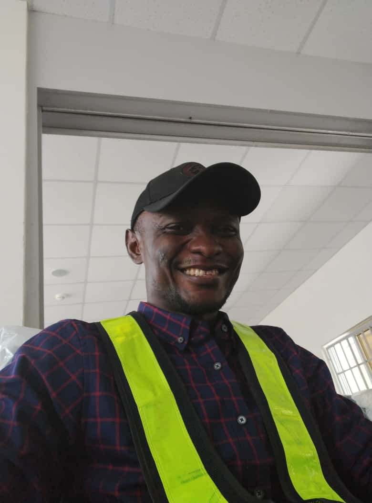
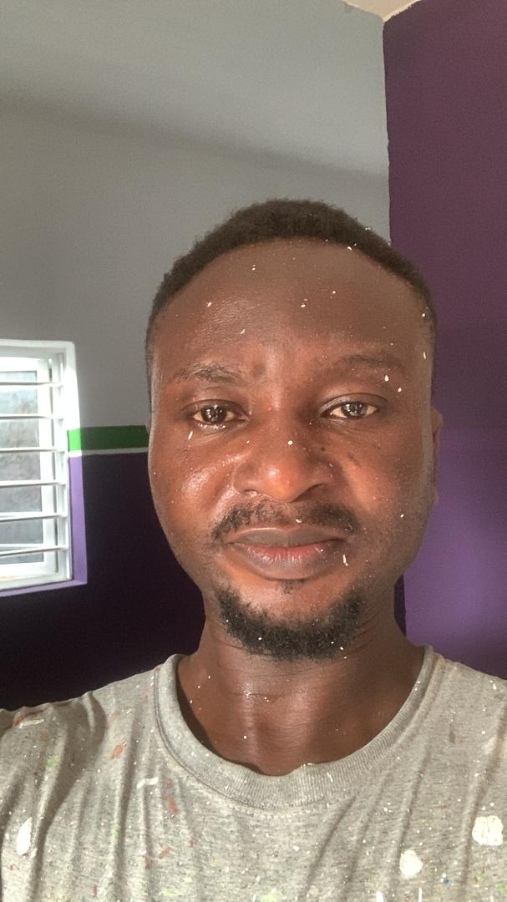
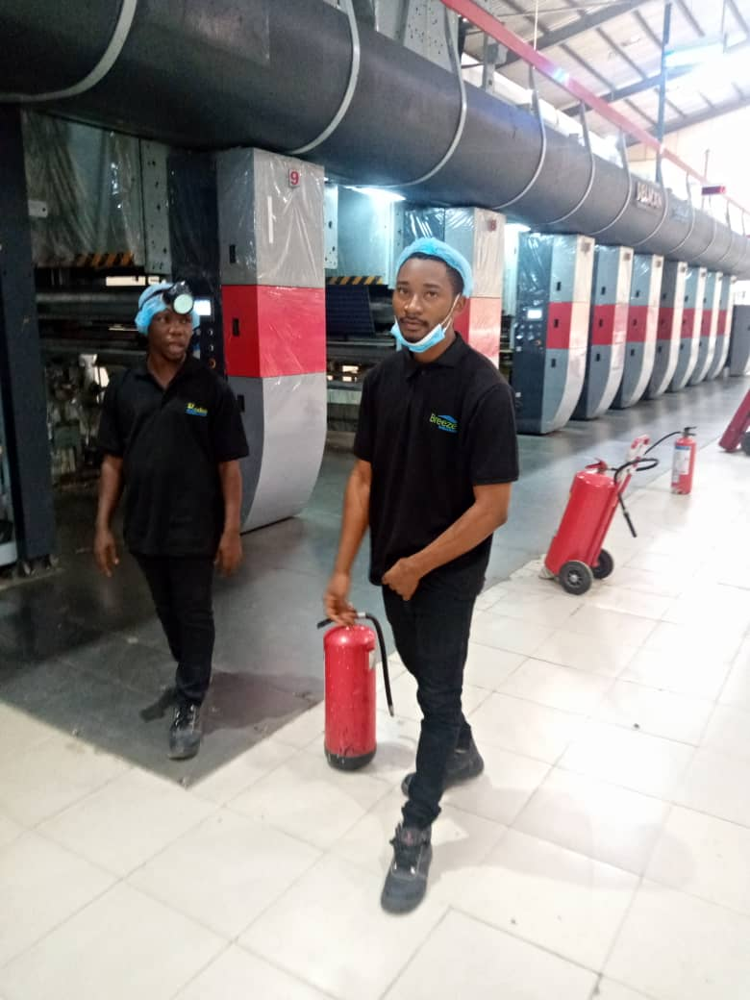

Louis "Obantar" Edet
Year of Induction: 1993
DOB: June 6
Occupation: Personal
Uduak-obong Maurice Umoh
Year of Induction: 1999
DOB: August 10
Occupation: Civil Engineer

Ntun Alfred
Year Of Induction: 2000
DOB: November 27
Occupation: Civil Engineer
Christopher Edem
Year of Induction: 2001
DOB: April 30
Occupation: Civil Servant
Austin Ekwo Kekong
Year Of Induction: 2003
Occupation: Assistant Lecturer, Department Of Educational Management, UNICAL.
Ekawu Gabriel M
Year Of Induction: 2003
DOB: October 6
Occupation: Land Surveyor (Federal Republic of Nigeria)
Christopher "Pappy" Dennis
Year Of Induction: 2003
Occupation: Civil Engineer

Sixtus Eval
Year Of Induction: 2003
DOB: August 6
Occupation: Tailor / Interior and Exterior Design
Okoro Donald Okpani
Year of Induction: 2003
DOB: December 23
Occupation: Hotel Manager

Charles Okon
Year of Induction: 2003
DOB: January 2
Occupation: Scientific Officer Department of Food safety and nutritional science, Ministry of Health, Cross River State
Paul Ibu
Year of Induction: 2003
DOB: May 3
Occupation: Student
Bernard Peter
Year Of Induction: 2004
Occupation: Lecturer, Chemistry Department UNICAL
Norbert Essien
Year of Induction: 2004
DOB: June 6
Occupation: Airlines Services
Emmanuel Udom
Year of Induction: 2004
DOB: April 10
Occupation: Fashion Designer
Andrew Augustine Joseph
Year Of Induction: 2005
Occupation: Driver, Kebb Design, Blocks Moulding
Thomas Ogar Besong
Year Of Induction: 2006
DOB: October 12
Occupation: Front-End Developer/ Web Designer
Peter Otu
Year Of Induction: 2007
Occupation: Business Man
Saviour Linus
Year of Induction: 2007
DOB: March 26
Occupation: Student
Joseph Linus
Year Of Induction: 2007
Occupation: Engineer
Emeka Samson
Year Of Induction: 2009
Occupation: Business (Motor Parts)
Terence A. Ebah
Year Of Induction: 2010
DOB: April, 10
Occupation: Civilian staff Nigerian police force education unit calabar.
Moffat Joseph
Year Of Induction: 2011
Occupation: Student At UNICAL
Liyel Edu
Year of Induction: 2012
DOB: October 1
Occupation: Student

Vancothem Awunna Agbor
Year of Induction: N/A
DOB: N/A
Occupation: Mechanical Engineer
More members will be added soon. Stay tuned.